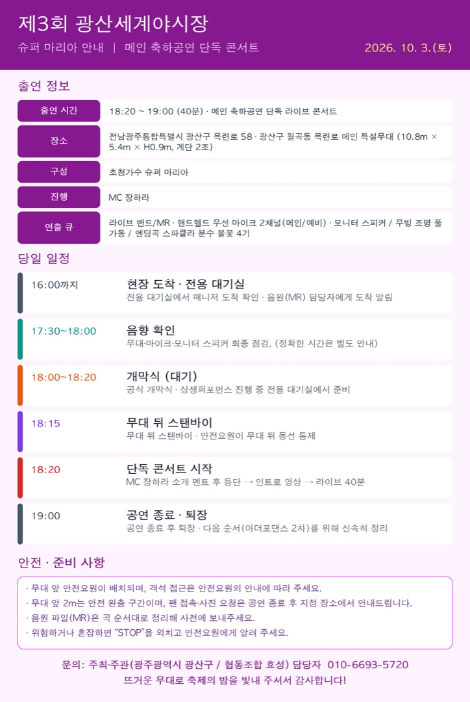

이미지를 누르면 크게 볼 수 있고, 길게 눌러 저장할 수 있습니다.
슈퍼 마리아 님은 올해 축제의 메인 축하공연 단독 콘서트를 맡아 주십니다.
10월 3일(토) 일정과 준비 사항을 안내드립니다. (첨부 이미지 참고)
출연 정보
- 일시: 2026. 10. 3.(토) 18:20 ~ 19:00 (40분) · 메인 축하공연 단독 라이브 콘서트
- 장소: 전남광주통합특별시 광산구 목련로 58
광산구 월곡동 목련로 메인 특설무대 (10.8m × 5.4m × H0.9m, 계단 2조)
- 구성: 초청가수 슈퍼 마리아
- 진행: MC 장하라
- 연출 큐: 라이브 밴드/MR, 핸드헬드 무선 마이크 2채널(메인/예비), 모니터 스피커 / 무빙 조명 풀 가동 / 엔딩곡 스파클라 분수 불꽃 4기
당일 일정
- 16:00까지 현장 도착 → 전용 대기실에서 매니저 도착 확인, 음원(MR) 담당자에게 도착 알림
- 17:30~18:00 음향 확인 (무대·마이크·모니터 스피커 최종 점검, 정확한 시간은 별도 안내)
- 18:00~18:20 공식 개막식·상생퍼포먼스 진행 중 전용 대기실에서 준비
- 18:15 무대 뒤 스탠바이 (안전요원이 무대 뒤 동선 통제)
- 18:20 MC 장하라 소개 멘트 후 등단 → 인트로 영상 → 라이브 40분
- 19:00 공연 종료·퇴장 (다음 순서 아더포댄스 2차를 위해 신속히 정리)
안전·준비 사항
- 무대 앞 안전요원이 배치되며, 객석 접근은 안전요원의 안내에 따라 주세요.
- 무대 앞 2m는 안전 완충 구간이며, 팬 접촉·사진 요청은 공연 종료 후 지정 장소에서 안내드립니다.
- 음원 파일(MR)은 곡 순서대로 정리해 사전에 보내주세요.
- 위험하거나 혼잡하면 “STOP”을 외치고 안전요원에게 알려 주세요.
궁금하신 점은 담당자(010-6693-5720)로 문의해 주세요.
뜨거운 무대로 축제의 밤을 빛내 주셔서 감사합니다.